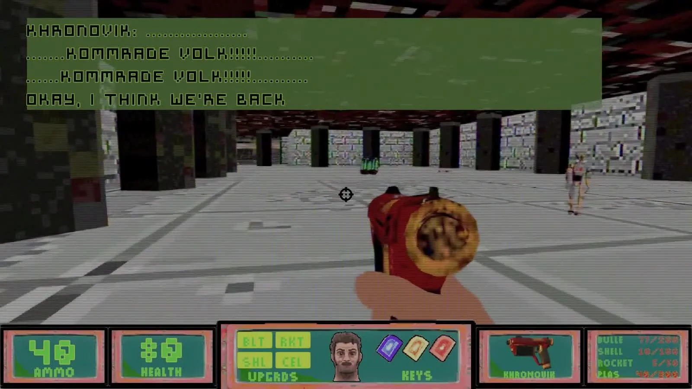
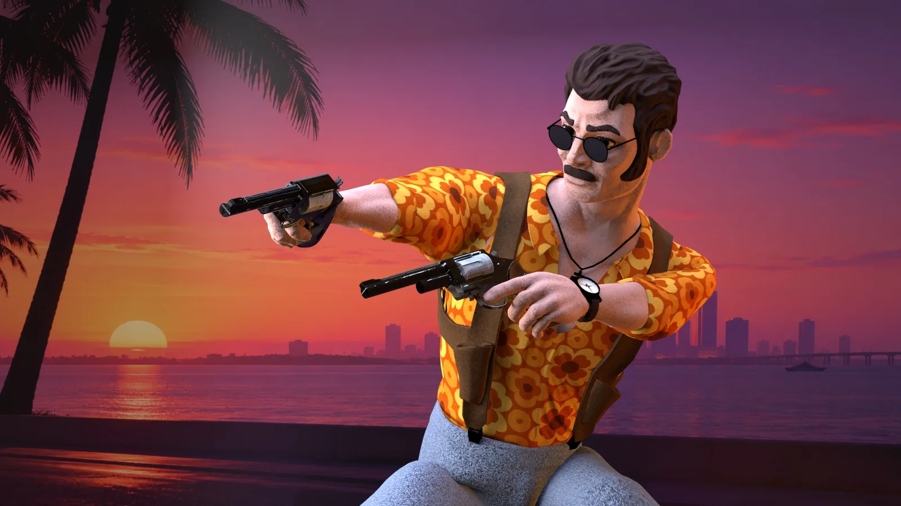
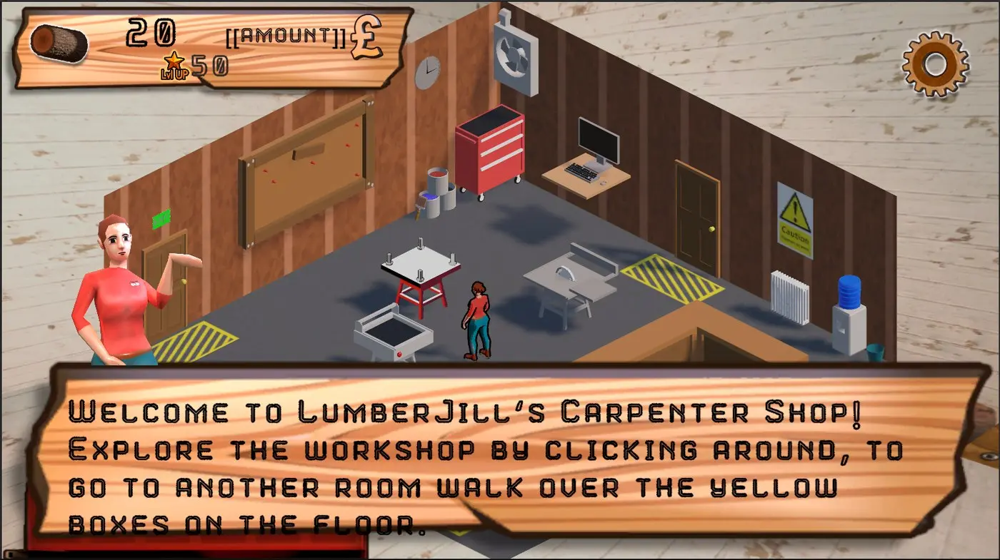

Portfolio / 2026London, UK
Technical artist building procedural systems and realtime worlds.
I work across 3D art, realtime implementation and procedural workflows, with a focus on building visual systems that stay practical for artists.
01
Portfolio
Selected work
Finished case studies alongside work still being documented, focused on technical decisions, visual results and what I personally owned.

01 Technical art · Runtime style systemProject WinterlightSolo developer / technical artist
02 Character art · Animation pipelineRay DelgadoCharacter artist · Animation integration Recovered project · Media capture pending 03 Unreal Engine character implementationCyberShadowsCharacter artist · Level assembly · Unreal integration
04 UI · Character art · Unity integrationLumberJill: The RPGUI designer · Character artist